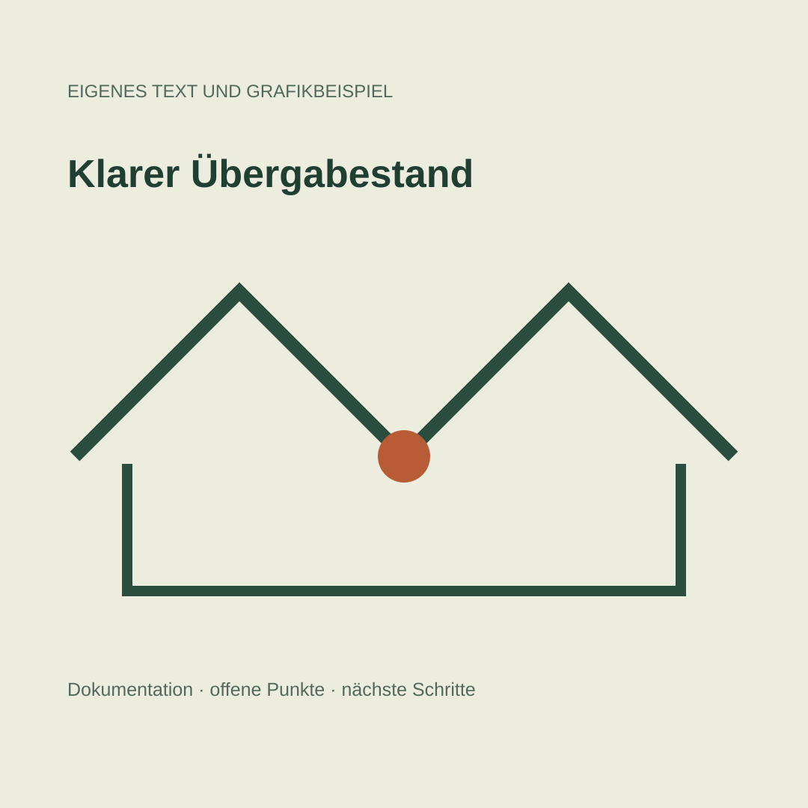
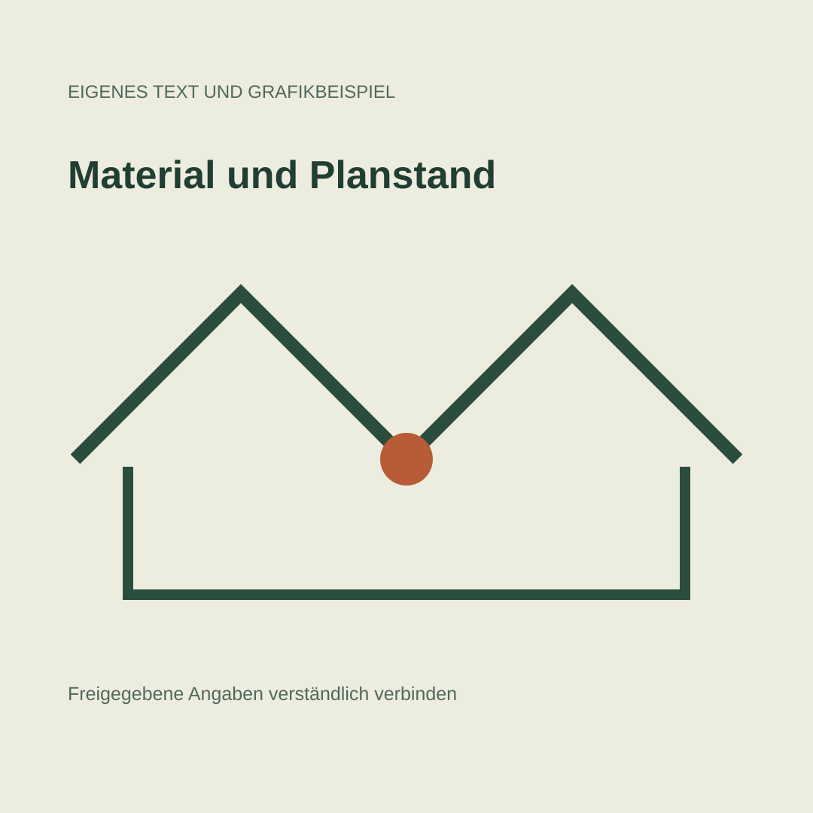

Przykłady LinkedIn DE i EN
Dwie pary redakcyjne dla fikcyjnej firmy budowlanej. Te same informacje i granice twierdzeń w obu językach.
Własne niepublikowane demonstracje, bez podszywania się pod rzeczywistą firmę i bez historii prowadzenia konta DACH.
Ein klarer Übergabestand spart Rückfragen
Vor der Übergabe eines Bauabschnitts hilft ein kurzer, nachvollziehbarer Standbericht: Was ist abgeschlossen, welche Punkte sind noch offen und wer übernimmt die nächste Aufgabe? Wir würden dazu freigegebene Fotos, den vereinbarten Leistungsumfang und eine Liste offener Punkte zusammenführen. Wichtig ist die Trennung zwischen dokumentierter Ausführung und noch ausstehender Freigabe. Eine Aufnahme allein ersetzt keine technische Abnahme. Dieser Beitrag ist ein eigenes Textbeispiel für ein fiktives Bauunternehmen und beschreibt keine tatsächlich ausgeführte Baustelle.
A clear handover record reduces follow-up questions
Before a construction phase is handed over, a short, traceable status report helps: what is complete, which items remain open and who owns the next task? We would bring together approved photographs, the agreed scope and a list of outstanding items. The distinction between documented work and pending approval matters. A photograph alone does not replace technical acceptance. This is an original writing sample for a fictional construction business, not a description of a completed client project.
Materialangaben brauchen einen eindeutigen Bezug
Eine Produktbezeichnung wirkt präzise, solange alle Beteiligten dasselbe Material meinen. In einer Projektmeldung sollten deshalb die freigegebene Bezeichnung, der Einsatzbereich und der aktuelle Planstand zusammenpassen. Technische Werte übernehmen wir aus bestätigten Unterlagen. Fehlt eine Angabe, markieren wir sie zur Klärung, statt einen plausibel klingenden Wert einzusetzen. So bleibt eine kurze Nachricht auch für Partner verständlich, die nicht am letzten Abstimmungstermin teilgenommen haben. Eigenes Beispiel ohne Kundendaten oder behauptete Projektergebnisse.
Material details need a clear reference
A product name appears precise only while everyone is referring to the same material. A project update should therefore connect the approved name, its intended use and the current drawing revision. We take technical values from confirmed documents. When a detail is missing, we flag it for clarification instead of inserting a plausible number. This keeps a short update understandable for partners who did not attend the latest coordination meeting. Original sample with no client data or claimed project results.
Grafiki autorskie




Źródła: teksty obu wersji. Nazwy produktów, liczby i twierdzenia o rzeczywistym projekcie wymagają zatwierdzonych materiałów klienta.